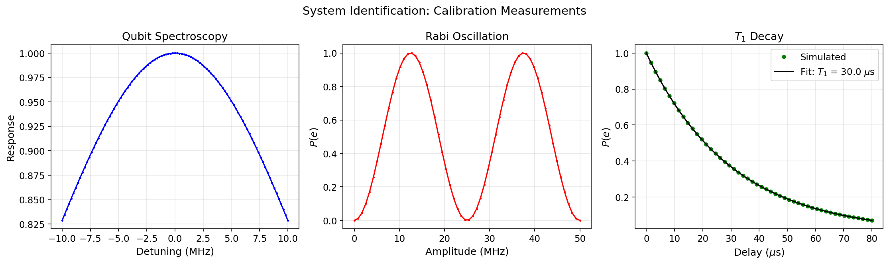

System Identification & Domain Randomization¶
This tutorial set explains how cqed_sim connects calibration measurements to robust-control workflows. The emphasis is not on fitting in isolation but on the complete pipeline: experimental data → fitted model parameters → uncertainty distribution → domain-randomized controller training.
Notebooks:
tutorials/31_system_identification_and_domain_randomization/01_calibration_targets_and_fitting.ipynbtutorials/31_system_identification_and_domain_randomization/02_evidence_to_randomizer_and_env.ipynb
Physics Background¶
What We Measure and Why¶
A real cQED experiment doesn't give us Hamiltonian parameters directly. Instead we observe indirect signatures:
| Measurement | Physical observable | Parameters constrained |
|---|---|---|
| Qubit spectroscopy | Lorentzian peak in \(P(e)\) vs. frequency | \(\omega_q\), linewidth \(\Gamma_2 = 1/T_2^*\) |
| Cavity spectroscopy | Cavity transmission vs. frequency, dispersive shift from qubit state | \(\omega_c\), \(\chi\) |
| Rabi chevron | Oscillation of \(P(e)\) vs. drive frequency and duration | Drive coupling, \(\omega_q\), pulse calibration |
| \(T_1\) decay | Exponential decay of \(P(e)\) after \(\pi\)-pulse | Qubit energy relaxation rate \(\Gamma_1 = 1/T_1\) |
| Ramsey fringe | Oscillation of \(P(e)\) vs. free-evolution time | Qubit detuning, \(T_2^* = 1/\Gamma_2^*\) |
Each measurement provides a likelihood \(p(\text{data} | \theta)\) for the model parameters \(\theta = (\omega_q, \omega_c, \chi, T_1, T_2, \ldots)\).
Calibration Fitting as Bayesian Inference¶
System identification in cqed_sim is framed as a Bayesian inverse problem:
- Prior — physical bounds on parameters (e.g., \(\omega_q / 2\pi \in [4, 8]\) GHz)
- Likelihood — the model prediction for each calibration trace given \(\theta\)
- Posterior — the updated distribution over \(\theta\) given the calibration data
In practice, the fitting uses maximum-a-posteriori (MAP) estimation or maximum-likelihood estimation (MLE) for each trace independently, then combines the fitted summaries into a joint uncertainty estimate.
Why Uncertainty Quantification Matters¶
The fitted parameters have uncertainty arising from:
- Finite measurement shots — statistical noise in the measured probabilities
- Spectral crowding — nearby transitions that shift apparent peak positions
- Drift — slow time variation of device parameters between calibration runs
- Model error — the dispersive model is an approximation; higher-order corrections are always present
This uncertainty must be propagated into controller design. A controller trained on the nominal (best-fit) parameters will fail on a device whose actual parameters lie even slightly away from the nominal.
Domain Randomization¶
Domain randomization addresses this by training the controller under a distribution of models. At each training episode, a new set of parameters \(\theta \sim p(\theta | \text{data})\) is sampled from the calibration posterior and the controller is trained to perform well across all of them.
If the training distribution covers the actual device distribution, the learned policy transfers to the real hardware without fine-tuning. The width of the training distribution directly controls the robustness–performance tradeoff: wider distribution → more robust but lower peak performance.
Included Notebooks¶
01_calibration_targets_and_fitting.ipynb¶
This notebook generates effective spectroscopy, Rabi, and T1 targets and inspects the fitted parameter summaries.
What it teaches:
- How
run_spectroscopy(...),run_rabi(...), andrun_t1(...)package synthetic calibration traces - Which fitted parameters and uncertainty estimates are exposed for downstream use
- How to think about these outputs as workflow inputs for later system-identification stages
Running calibration targets:
from cqed_sim.system_id import (
run_spectroscopy,
run_rabi,
run_t1,
CalibrationTargets,
)
targets = CalibrationTargets.from_model(model, frame, noise_spec)
# Qubit spectroscopy
spec_result = run_spectroscopy(
targets,
freq_range_hz=(-10e6, 10e6),
n_points=101,
shots=512,
)
print(f"Fitted ω_q/2π: {spec_result.omega_q_hz:.3f} Hz")
print(f"Fitted T2*: {spec_result.t2star_s:.2e} s")
# Time Rabi
rabi_result = run_rabi(
targets,
duration_range_s=(10e-9, 200e-9),
n_points=60,
)
print(f"Fitted Ω_R/2π: {rabi_result.rabi_frequency_hz:.3f} Hz")
# T1 relaxation
t1_result = run_t1(
targets,
time_range_s=(0, 80e-6),
n_points=60,
)
print(f"Fitted T1: {t1_result.t1_s:.2e} s")
Interpreting the fits:
Each fit returns point estimates and uncertainty bounds. The spectroscopy fit gives the qubit frequency and linewidth; the Rabi fit gives the drive coupling and verifies the frequency calibration; the T1 fit gives the energy-relaxation time.

02_evidence_to_randomizer_and_env.ipynb¶
This notebook packages fitted summaries into CalibrationEvidence, converts them into a DomainRandomizer, and wires the resulting priors into a hybrid RL environment.
What it teaches:
- How calibration posteriors become train-time randomization priors
- How
randomizer_from_calibration(...)bridges the calibration and control subsystems - What metadata and observation products are produced at
env.reset(...)
Creating calibration evidence:
from cqed_sim.system_id import CalibrationEvidence
evidence = CalibrationEvidence(
spectroscopy = spec_result,
rabi = rabi_result,
t1 = t1_result,
)
print(f"Estimated χ/2π: {evidence.chi_hz:.3e} ± {evidence.chi_uncertainty_hz:.3e} Hz")
Converting to domain randomizer:
from cqed_sim.system_id import randomizer_from_calibration
randomizer = randomizer_from_calibration(
evidence,
sample_count=8, # Simultaneous parameter samples per training step
extra_noise_scale=0.2, # Add 20% extra uncertainty beyond calibration bounds
)
# Inspect the parameter distributions
for param, dist in randomizer.distributions.items():
print(f" {param}: mean={dist.mean:.3e}, std={dist.std:.3e}")
Wiring into an RL environment:
from cqed_sim.rl_control import HybridCQEDEnv, HybridEnvConfig
config = HybridEnvConfig(
task = "qubit_pi_pulse",
domain_randomization = randomizer.to_config(),
)
env = HybridCQEDEnv(config)
obs, info = env.reset()
print(f"Reset metadata: {info['model_parameters']}")
At each env.reset(), a new set of model parameters is sampled from the domain-randomization distribution. The observation at the first step includes summary statistics of the current model instance, allowing the agent to adapt its strategy to the specific sample.
Why This Set Exists¶
Robust control should not be disconnected from calibration. If the device characterization changes, the uncertainty model used for controller training should change with it. These notebooks make that dependency explicit.
They also provide a stable workflow surface for understanding the repository's system-identification abstractions before moving on to policy training or more hardware-aware control studies.
Related References¶
- System Identification API
- Calibration Targets API
- RL Hybrid Control — using calibration priors in RL training
- GRAPE Optimal Control — deterministic optimal control without RL